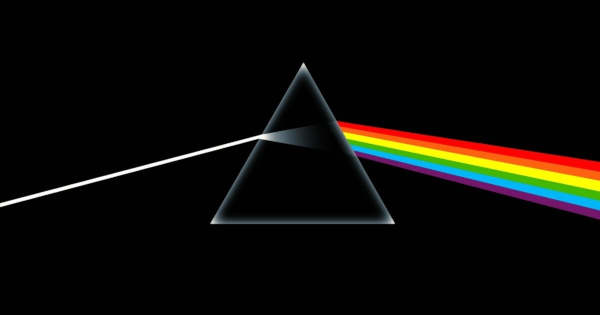

Pink Floyd

Origem
Pink Floyd foi uma banda britânica de rock formada em Londres em 1965. Ganhando seguidores como um grupo de rock psicodélico, eles se destacaram por suas composições longas, pela experimentação sonora, pelas letras filosóficas e pelas apresentações ao vivo criativas, o que levou a se tornarem uma banda líder do gênero do rock progressivo. Eles são um dos grupos mais bem-sucedidos comercialmente e influentes da história da música popular.
Integrantes
- David Gilmour
- Função
- Guitarrista e Vocalista
- Rogers Waters
- Função
- Baixista e Vocalista
- Richard Wright
- Função
- Tecladista
- Nick Manson
- Função
- Bateirista
Albúms
- The Dark Side of The Mon
- Sobre
- The Dark Side of the Moon é o oitavo álbum de estúdio da banda britânica de rock progressivo Pink Floyd, lançado em 1 de março de 1973. O disco marca uma nova fase no som da banda, com letras mais pessoais e instrumentais menores, contendo alguns dos mais complicados usos dos instrumentos e efeitos sonoros existentes na época, incluindo o som de alguém correndo à volta de um microfone e a gravação de múltiplos relógios a tocar ao mesmo tempo.